import pandas as pd
from sklearn.preprocessing import StandardScaler, LabelEncoder
from sklearn.decomposition import PCA
from sklearn.manifold import TSNE
import matplotlib.pyplot as plt
import numpy as np
df = pd.read_csv('../../data/processed-data/illinois_exoneration_data.csv')
# Select features of interest
features = ['age', 'sentence_in_years', 'years_lost', 'race', 'county']
df = df[features].dropna()
# Encode categorical variables
le_race = LabelEncoder()
le_county = LabelEncoder()
df['race_encoded'] = le_race.fit_transform(df['race'])
# Standardize numerical variables
scaler = StandardScaler()
scaled_features = scaler.fit_transform(df[['age', 'sentence_in_years', 'years_lost']])
X = scaled_features # Already standardizedUnsupervised Learning
Introduction and Motivation
This analysis employs unsupervised learning techniques—including Principal Component Analysis (PCA), t-Distributed Stochastic Neighbor Embedding (t-SNE), K-Means, DBSCAN, and Hierarchical Clustering—to examine the Illinois exoneration dataset. The primary objective is to identify patterns and hidden structures within the data, particularly focusing on how case characteristics, demographic variables (such as race and county), and the number of years lost to wrongful convictions intersect.
The analysis is structured as follows:
1. Dimensionality Reduction: Methods such as PCA and t-SNE are utilized to project high-dimensional data into lower-dimensional spaces, simplifying the visualization of complex relationships while preserving key structural and variance-based insights.
Clustering: Clustering techniques—K-Means, DBSCAN, and Hierarchical Clustering—are applied to uncover natural groupings within the dataset and assess whether these clusters align with demographic features like race or case-related factors.
Evaluation and Interpretation: The performance of each method is evaluated, and clustering results are compared to draw meaningful interpretations. Visualizations are integrated throughout the analysis to enhance clarity and support findings.
The motivation for this analysis stems from the critical need to uncover systemic patterns in wrongful conviction data. By applying unsupervised learning methods, the investigation aims to reveal relationships and disparities between demographic factors and case outcomes that are not immediately apparent. These insights contribute to a deeper understanding of biases and inequities within exoneration cases and support broader efforts for justice system reform.
Data Preprocessing
The data preprocessing stage prepares the Illinois exoneration dataset for dimensionality reduction and clustering. This step involves selecting relevant features, encoding categorical variables, and standardizing numerical features to ensure compatibility with unsupervised learning algorithms.
Feature Selection
The features chosen for this analysis include a combination of numerical and categorical variables. The numerical variables—age, sentence in years, and years lost—were selected to provide quantitative insights into exoneration cases, such as the age at conviction, the length of imprisonment, and the total number of years lost. The categorical variable race was included to capture demographic patterns and be used as a color vector during visualization to assess how the identified clusters align with racial groupings.
The selected features are as follows:
- Numerical: age, sentence_in_years, years_lost
- Categorical: race
Standardization and Encoding
To ensure that numerical features contribute equally to the analysis, they were standardized using StandardScaler. Standardization adjusts each numerical feature to have a mean of 0 and a standard deviation of 1, preventing variables like sentence lengths from dominating the clustering process. The categorical variable race was encoded using Label Encoding, which assigns a numerical value to each category (e.g., race). This transformation ensures compatibility with algorithms such as K-Means, DBSCAN, and Hierarchical Clustering that require numerical inputs for processing.
Dimensionality Reduction
The objective of this section is to explore and demonstrate the effectiveness of PCA and t-SNE in reducing the dimensionality of complex data while preserving essential information and improving visualization.
PCA (Principal Component Analysis)
# ---------------------------------------------------------------
# Unsupervised Learning Implementation
# Principal Component Analysis (PCA) and clustering methods used
# in this code are based on demos and labs provided by:
#
# Hickman, J. (2024.). Principal Components Analysis and clustering.
# Georgetown University Centralized Lecture Content.
# Retrieved from: https://jfh.georgetown.domains/centralized-lecture-content/content/machine-learning/unsupervised-learning/dimensionality-reduction/PCA/notes.html#pca-vs-clustering
# ---------------------------------------------------------------
# Define utility plotting function
def plot_2D(X,color_vector, plot_title):
fig, ax = plt.subplots()
ax.scatter(X[:,0], X[:,1],c=color_vector, alpha=0.5) #, c=y
ax.set(xlabel='PC-1 ', ylabel='PC-2',
title= plot_title)
ax.grid()
# fig.savefig("test.png")
plt.show()
# Define variance plot function to visualize variance explained by PCA components
def plot_variance_explained(pca):
explained_variance_ratio = pca.explained_variance_ratio_
# Plot explained variance ratio
plt.figure(figsize=(8, 6))
plt.plot(range(1, len(explained_variance_ratio) + 1), explained_variance_ratio, marker='o')
plt.xlabel('Number of components')
plt.ylabel('Explained variance ratio')
plt.title('Explained Variance Ratio by Component')
plt.show()
# Plot cumulative explained variance
cumulative_variance = np.cumsum(explained_variance_ratio)
plt.figure(figsize=(8, 6))
plt.plot(range(1, len(cumulative_variance) + 1), cumulative_variance, marker='o')
plt.xlabel('Number of components')
plt.ylabel('Cumulative explained variance')
plt.title('Cumulative Explained Variance by Component')
plt.show()Explained Variance Ratio
The explained variance ratio in PCA indicates how much of the total variance in the dataset is captured by each principal component (PC). It plays a crucial role in determining the optimal number of components to use in PCA. Each principal component captures a portion of the total variance, with the first component (PC-1) explaining the most variance, followed by the second (PC-2), and so on. By examining the variance distribution across components, we can identify which components contribute the most information to the dataset. The cumulative variance is obtained by summing the explained variance ratios of successive components. This cumulative measure helps determine how many components are required to retain a significant portion of the total variance, such as 90% or 95%. Fewer components result in a simpler and more efficient representation of the data, while still preserving most of its structure.
# Apply PCA
pca = PCA()
X_pca = pca.fit_transform(X)
# Print variance explained and cumulative variance by each principal component
print("Variance explained by each principal component:")
print(pca.explained_variance_ratio_[:10])
print("\nCumulative variance explained by each principal component:")
print(np.cumsum(pca.explained_variance_ratio_)[:10])
# Plot the variance explained
plot_variance_explained(pca)Variance explained by each principal component:
[0.59465697 0.29997716 0.10536587]
Cumulative variance explained by each principal component:
[0.59465697 0.89463413 1. ]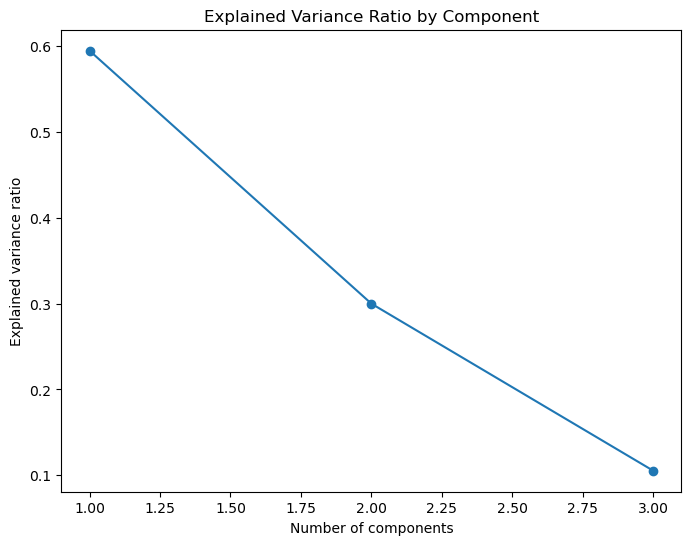
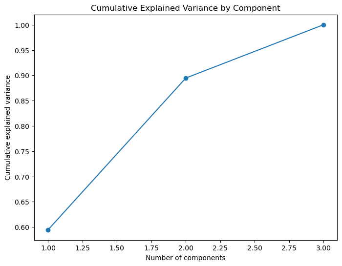
The first plot, “Explained Variance Ratio by Component,” shows the proportion of variance captured by each principal component. The steep decline in this plot indicates that the first component (PC-1) explains the largest portion of the variance, followed by the second component (PC-2). After these first two components, the amount of additional variance explained by subsequent components decreases significantly. This behavior suggests that most of the dataset’s structure can be captured by the first two components.
The second plot, “Cumulative Explained Variance by Component,” illustrates the total variance explained as additional components are included. The curve rises sharply at first, with the first two components capturing approximately 90% of the total variance. Beyond the second component, the curve begins to flatten, showing diminishing returns. This flattening indicates that including more components does not add much new information to the representation of the data.
Together, these plots highlight the importance of the first two principal components. By focusing on these components, we can reduce the dimensionality of the data while retaining most of its variance. This simplification improves computational efficiency, reduces model complexity, and makes data visualization more interpretable without sacrificing critical information.
pca = PCA(n_components=2)
X_pca_2 = pca.fit_transform(X)
# Step 5: Plot 2D results
plot_2D(X_pca_2, df['race_encoded'], 'Principal Component Analysis Results')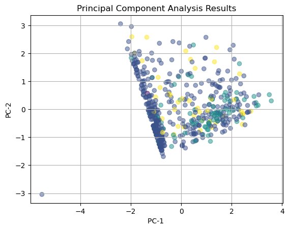
The plot, “Principal Component Analysis Results,” displays the data reduced to two dimensions (PC-1 and PC-2), which are the two principal components that capture the most variance in the dataset. Each point represents an individual data observation, with colors corresponding to the race_encoded variable.
- PC-1 (x-axis) captures the largest portion of the variance (around ~60%).
- PC-2 (y-axis) explains the next largest portion of variance (~30%).
From the plot, the data points appear somewhat clustered along the PC-1 axis, indicating that much of the variance in the dataset is captured in this direction. However, there is also a spread along PC-2, suggesting that the second principal component adds additional separation. The vertical “striping” and overlapping points suggest that race (color-coded) does not perfectly align with the variance captured by the first two components. This implies that the numerical features (age, sentence_in_years, years_lost) alone may not fully separate or distinguish racial categories.
In summary, while PCA effectively reduces the data to two dimensions, the clustering of points indicates that race-based patterns may not be strongly linear within the numerical features. Further investigation, such as applying clustering techniques (e.g., K-Means) or nonlinear dimensionality reduction methods like t-SNE, could provide additional insights into underlying relationships.
t-SNE (t-distributed Stochastic Neighbor Embedding)
# Test different perplexity values
perplexity_values = [5, 30, 50, 100]
for perplexity in perplexity_values:
print(f"Running t-SNE with perplexity={perplexity}")
tsne = TSNE(n_components=2, perplexity=perplexity, random_state=42)
X_tsne = tsne.fit_transform(X)
plot_2D(X_tsne, df['race_encoded'], f't-SNE Results (Perplexity={perplexity})')Running t-SNE with perplexity=5
Running t-SNE with perplexity=30
Running t-SNE with perplexity=50
Running t-SNE with perplexity=100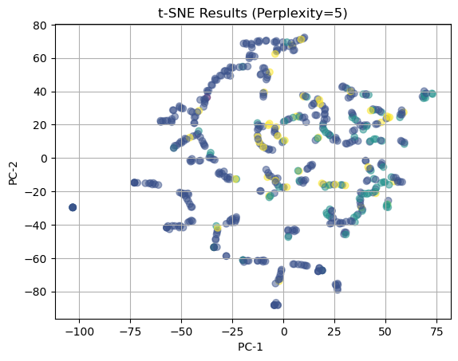
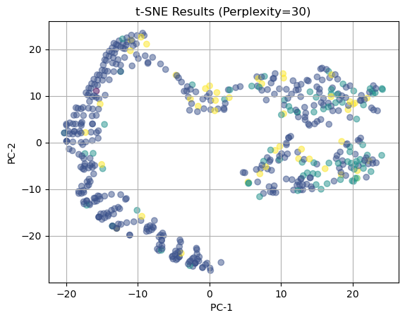
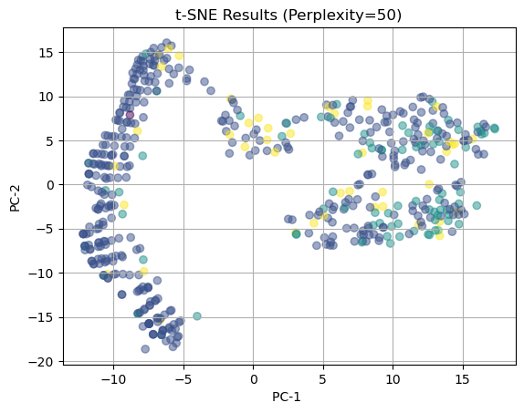
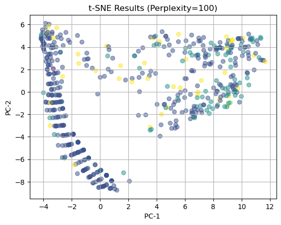
The t-SNE visualizations were generated with perplexity values of 5, 30, 50, and 100 to explore how the parameter influences the clustering structure. Perplexity determines how local or global the relationships are in the data, with lower values focusing on small neighborhoods and higher values capturing broader global patterns.
At perplexity = 5, the plot shows very fragmented and overly localized clusters. While small neighborhoods are highlighted, the data appears disjointed, making it difficult to identify meaningful global groupings. This suggests that a perplexity of 5 is too low to capture a coherent structure.
At perplexity = 30, the visualization becomes more organized. There is a noticeable balance between local and global structure, with clear regional groupings emerging. Smaller clusters appear alongside broader trends, providing an interpretable and balanced representation of the data.
At perplexity = 50, the clustering becomes more cohesive and distinct. The structure of the data is well-defined, and the groupings are clearer compared to perplexity = 30. The balance between small-scale patterns and global structure is maintained, making this value an ideal choice for visualizing race-based patterns in the data.
At perplexity = 100, the plot emphasizes the global structure at the expense of local details. The clusters become stretched horizontally, and smaller, fine-grained groupings are smoothed out. While it highlights broad relationships, it sacrifices the clarity of smaller clusters that may hold important insights.
In conclusion, a perplexity value of 50 was chosen because it produces the clearest and most cohesive clusters while preserving both local details and global structure. This value strikes the best balance for identifying meaningful groupings in the data and visualizing patterns related to race.
Comparison of PCA and t-SNE Results
# Apply t-SNE with perplexity=50
tsne = TSNE(n_components=2, perplexity=50, random_state=42)
X_tsne = tsne.fit_transform(X) # X is your standardized input data
# Side-by-side comparison: PCA vs t-SNE
fig, axes = plt.subplots(1, 2, figsize=(14, 6))
# PCA Plot
axes[0].scatter(X_pca[:, 0], X_pca[:, 1], c=df['race_encoded'], alpha=0.5)
axes[0].set_title('PCA Results')
axes[0].set_xlabel('PC-1')
axes[0].set_ylabel('PC-2')
# t-SNE Plot
axes[1].scatter(X_tsne[:, 0], X_tsne[:, 1], c=df['race_encoded'], alpha=0.5)
axes[1].set_title('t-SNE Results')
axes[1].set_xlabel('t-SNE Component 1')
axes[1].set_ylabel('t-SNE Component 2')
plt.tight_layout()
plt.show()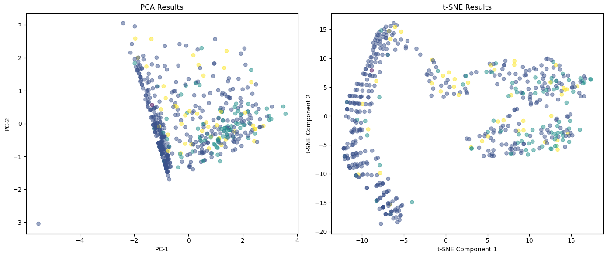
The two plots above compare the results of Principal Component Analysis (PCA) and t-SNE (perplexity=50) when applied to the same dataset.
In the PCA Results (left plot), the data is reduced to two principal components, which capture the directions of maximum variance. The points appear somewhat aligned along the vertical axis (PC-1), indicating that the majority of the variance lies in that direction. However, the plot does not show clear or well-defined clusters, suggesting that PCA is capturing global variance patterns but struggles to preserve local neighborhood structures. The visual separation by race (color-coded) is not particularly clear in the PCA output.
In contrast, the t-SNE Results (right plot) provide a more nuanced and detailed visualization. By focusing on both local and global relationships, t-SNE produces distinct clusters and patterns that are more clearly separated. The clusters show greater cohesion, suggesting that t-SNE is better at preserving the local structure of the data. While there is still overlap among the points, the t-SNE output reveals a clearer structure and grouping compared to PCA, particularly with race-based color encoding.
Overall, t-SNE (with perplexity=50) performs better at uncovering patterns and potential clusters in the dataset, whereas PCA primarily captures the global variance but fails to separate the groups as effectively. This highlights the advantage of t-SNE for visualizing complex, high-dimensional data where local relationships are important.
Clustering Methods
Apply clustering techniques (K-Means, DBSCAN, and Hierarchical clustering) to a selected dataset. The goal is to understand how each method works, compare their performance, and interpret the results.
We apply K-Means, DBSCAN, and Hierarchical Clustering to identify clusters in the data.
K-Means
K-Means is a widely used unsupervised clustering algorithm that partitions data into a predefined number of clusters, denoted as K. The algorithm works iteratively to minimize the Within-Cluster Sum of Squares (WCSS), which measures the variance within each cluster. K-Means starts by randomly selecting K initial cluster centroids and assigns each data point to the closest centroid based on the Euclidean distance. It then recalculates the centroids as the mean of the data points within each cluster and repeats the assignment process until the centroids stabilize or a convergence criterion is met.
The primary purpose of K-Means is to group data into cohesive clusters where intra-cluster distances are minimized, and inter-cluster distances are maximized. It is particularly effective for spherical or well-separated clusters. However, K-Means requires the number of clusters (K) to be specified in advance, which necessitates hyperparameter tuning.
Elbow-Method
To determine the optimal number of clusters, we use the Elbow Method and the Silhouette Score. The Elbow Method involves plotting the WCSS against the number of clusters and identifying the “elbow point,” where the rate of decrease in WCSS slows down. This point suggests the optimal number of clusters, as adding more clusters beyond this point yields diminishing returns in variance reduction. Additionally, the Silhouette Score evaluates the quality of clustering by measuring how similar each data point is to its own cluster compared to others. A higher Silhouette Score indicates better-defined and more cohesive clusters.
from sklearn.cluster import KMeans
from sklearn.metrics import silhouette_score
import warnings
warnings.filterwarnings("ignore", category=UserWarning)
# Range for number of clusters
k_values = range(2, 10)
wcss = []
silhouette_scores = []
# Find optimal K using WCSS and silhouette score
for k in k_values:
kmeans = KMeans(n_clusters=k, random_state=42)
labels = kmeans.fit_predict(X) # Assuming X is the 2D data (e.g., PCA or t-SNE)
wcss.append(kmeans.inertia_)
silhouette_scores.append(silhouette_score(X, labels))
# Plot Elbow Curve
plt.figure(figsize=(8, 5))
plt.plot(k_values, wcss, '-o')
plt.title("Elbow Method for K-Means")
plt.xlabel("Number of Clusters (K)")
plt.ylabel("Within-Cluster Sum of Squares (WCSS)")
plt.show()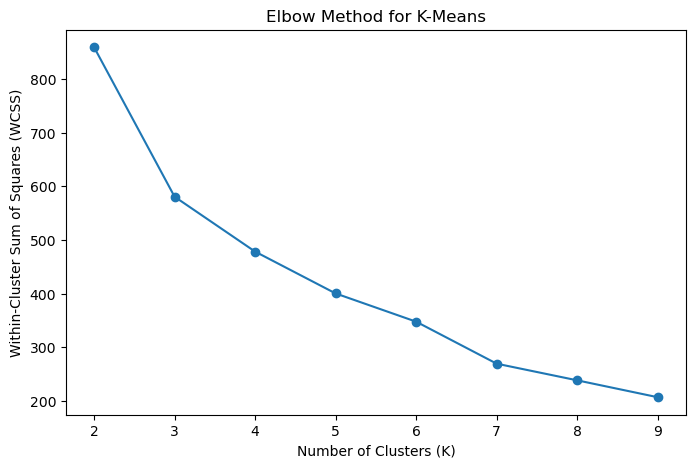
In the Elbow Method plot above, the WCSS decreases significantly up to around K=4 or K=5, after which the curve begins to flatten, suggesting that 4–5 clusters might be optimal. By combining insights from both the Elbow Method and Silhouette Scores, we can confidently select the best value for K and visualize the clustering results to assess their alignment with meaningful patterns in the data.
Visualize Clusters for Optimal K
# Visualize Clusters for Optimal K
optimal_k = 4 # Replace with the K identified using the elbow point
kmeans = KMeans(n_clusters=optimal_k, random_state=42)
labels_kmeans = kmeans.fit_predict(X)
plot_2D(X, labels_kmeans, 'K-Means Clustering Results')
The visualization above shows the results of K-Means clustering applied with an optimal value of K = 4, as determined using the Elbow Method. The data is projected onto the first two principal components (PC-1 and PC-2) for visualization, and each point is color-coded according to its cluster assignment.
The clusters are well-separated and exhibit distinct patterns along the two principal components. Notably: 1. The yellow cluster occupies the far right of the PC-1 axis, indicating that this group has unique characteristics that distinguish it from the other clusters. 2. The purple cluster is concentrated at the bottom of the plot, suggesting that it shares common features that separate it from the other groups, particularly along PC-2. 3. The teal and blue clusters are more centered and slightly overlap but still maintain discernible boundaries, reflecting some similarities in their features.
The choice of K = 4 aligns well with the nature of the exoneration data, where race plays a significant role. In the EDA, the key racial groups considered were Black, Hispanic, White, Native American, and Asian. However, the Asian group had such a negligible presence in the dataset that it had to be excluded, making four clusters a logical choice. This result mirrors the underlying data distribution, where the primary racial groups remaining are well-represented in the clustering results.
These findings indicate that K-Means successfully partitions the data into four meaningful clusters based on the selected features. The clear separation of clusters along PC-1 and PC-2 reflects that these principal components effectively capture the variance in the data and help distinguish racial groupings. The slight overlap between clusters may be due to shared attributes among groups or the limitations of the chosen features.
Further analysis could involve examining the cluster centroids to identify the defining characteristics of each group. Additionally, assessing how these clusters align with the race variable (race_encoded) could provide deeper insights into systemic patterns within the exoneration dataset.
DBSCAN (Density-Based Spatial Clustering of Applications with Noise)
DBSCAN is an unsupervised clustering algorithm that groups data points based on density. Unlike K-Means, which requires a predefined number of clusters, DBSCAN identifies clusters by locating dense regions in the data and marking points in less dense areas as noise. It is particularly effective for identifying clusters of arbitrary shapes and handling outliers.
DBSCAN relies on two key parameters:
1. eps: The maximum distance between two points to be considered part of the same neighborhood.
2. min_samples: The minimum number of points required to form a dense region (a cluster).
The algorithm works as follows:
- DBSCAN starts with an unvisited point and determines its neighborhood within the radius eps.
- If the number of points in this neighborhood exceeds min_samples, a cluster is formed.
- The algorithm expands this cluster by iteratively including points within eps distance of other points in the cluster.
- Points that do not belong to any cluster are labeled as noise (outliers).
The advantage of DBSCAN is its ability to discover clusters of varying shapes and handle noisy data. However, selecting the optimal values for eps and min_samples is critical to its performance. A common approach is to experiment with different eps values and evaluate the results using a metric like the Silhouette Score. Unlike K-Means, DBSCAN does not assign all data points to clusters—points in sparse areas are labeled as noise, which can be useful for identifying outliers.
To apply DBSCAN, we iterate over multiple values of eps to determine which one produces the most cohesive clusters. Visualizing the clusters and assessing the Silhouette Score helps confirm the quality of the results. In the context of the exoneration dataset, DBSCAN is particularly useful for detecting patterns in data with irregular boundaries and identifying anomalies, such as racial groups with limited representation.
Eps Hyper-Parameter Tuning
from sklearn.cluster import DBSCAN
# Test different eps values for DBSCAN
eps_values = [0.5, 1.0, 1.5, 2.0]
for eps in eps_values:
dbscan = DBSCAN(eps=eps, min_samples=5)
labels_dbscan = dbscan.fit_predict(X)
try:
sil_score = silhouette_score(X, labels_dbscan)
print(f"EPS: {eps}, Silhouette Score: {sil_score}")
except:
print(f"EPS: {eps}, Silhouette Score: Undefined (noise present)")
# Visualize Clusters
plot_2D(X, labels_dbscan, f'DBSCAN Clustering (EPS={eps})')EPS: 0.5, Silhouette Score: 0.1970450363722957
EPS: 1.0, Silhouette Score: 0.7808945570083328
EPS: 1.5, Silhouette Score: 0.7808945570083328
EPS: 2.0, Silhouette Score: 0.7808945570083328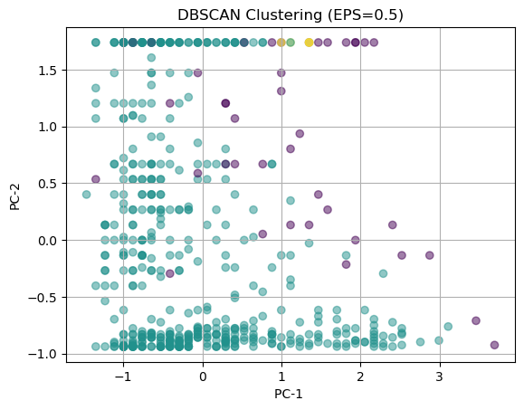

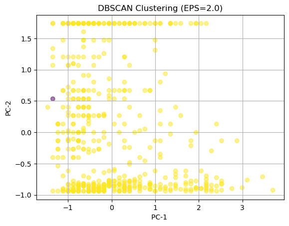
The eps values for DBSCAN were selected by testing a range of values (0.5, 1.0, 1.5, and 2.0) to examine the algorithm’s sensitivity to its key parameter. DBSCAN uses eps (neighborhood radius) and min_samples to define dense regions, with eps controlling the size of these regions. Smaller eps values result in more fragmented clusters, while larger values lead to fewer, broader clusters. These specific eps values were chosen to incrementally observe how the clustering changes and identify the best balance between fragmentation and cohesion.
- EPS = 0.5
- At
eps=0.5, the clusters are very fragmented, with many points labeled as noise (points not assigned to any cluster). This fragmentation occurs because the neighborhood radius is too small to form large, cohesive clusters.
- The Silhouette Score is 0.197, indicating poor clustering performance and high intra-cluster variance. The data points lack cohesion, and the results do not form meaningful groups.
- At
- EPS = 1.0
- With
eps=1.0, the clustering improves significantly, and more points are assigned to clusters. The dense regions start to emerge, and noise points are minimized.
- The Silhouette Score improves to 0.78, reflecting better-defined clusters and greater separation between groups. This value of
epsrepresents a good balance where clusters form without excessive noise, and cohesion is maintained.
- With
- EPS = 1.5
- At
eps=1.5, the clustering remains largely the same as ateps=1.0. Most points are grouped into a single large cluster, while a small number of points remain on the periphery.
- The Silhouette Score remains stable at 0.78, but the clustering results show diminishing returns—expanding the neighborhood size does not yield additional structure in the data.
- At
- EPS = 2.0
- When
eps=2.0, the algorithm assigns almost all points to a single large cluster. While this eliminates noise points, it also removes meaningful structure in the data.
- The Silhouette Score remains consistent, but visually, the clustering lacks separation, indicating that
eps=2.0is too large for this dataset.
- When
The analysis of DBSCAN results shows that eps=1.0 provides the best clustering performance. At this value, the clusters are well-defined, with minimal noise and a Silhouette Score of 0.78. Smaller values of eps (e.g., 0.5) lead to fragmented clusters with significant noise, while larger values (e.g., 1.5 and 2.0) over-smooth the data, resulting in fewer meaningful clusters. Thus, eps=1.0 is chosen as the optimal value for DBSCAN, balancing noise reduction with cohesive clustering.
Hierarchical Clustering
Hierarchical Clustering is an unsupervised machine learning algorithm that builds a hierarchy of clusters through an iterative process. Unlike K-Means, which requires a predefined number of clusters, hierarchical clustering creates a tree-like structure called a dendrogram that represents how data points are grouped together at different levels of granularity. The algorithm can be categorized into two main approaches: agglomerative (bottom-up) and divisive (top-down).
In agglomerative clustering, the process starts with each data point as its own cluster. Pairs of clusters are then progressively merged based on their similarity (distance) until a single cluster containing all the data points is formed. The linkage method determines how the distance between clusters is measured. For this analysis, Ward’s linkage was used, which minimizes the variance between clusters during the merging process. Ward’s method is particularly effective for producing well-balanced and cohesive clusters.
The purpose of hierarchical clustering is to provide a clear visual representation of the clustering process through the dendrogram. By analyzing the dendrogram, we can identify the optimal number of clusters by “cutting” the tree at a certain height where the clusters are most distinct. This approach does not require prior knowledge of the number of clusters, making it particularly useful for exploratory analysis.
To determine the optimal number of clusters, we examined the dendrogram for large vertical distances, which indicate well-separated clusters. Ward’s linkage helps ensure that the resulting clusters have minimal intra-cluster variance, leading to more compact and interpretable groupings. This makes hierarchical clustering especially robust for datasets like ours, where clear group separations are important.
In summary, hierarchical clustering using Ward’s linkage provided a flexible and interpretable way to explore the clustering structure. By analyzing the dendrogram and cutting at the appropriate height, we were able to identify meaningful clusters within the data. Compared to K-Means and DBSCAN, hierarchical clustering offers the advantage of visualizing relationships between clusters, making it a valuable method for validating clustering results.
from scipy.cluster.hierarchy import dendrogram, linkage
from sklearn.cluster import AgglomerativeClustering
# Create Dendrogram
linkage_matrix = linkage(X, method='ward')
plt.figure(figsize=(10, 7))
dendrogram(linkage_matrix)
plt.title("Hierarchical Clustering Dendrogram")
plt.xlabel("Samples")
plt.ylabel("Distance")
plt.show()
# Apply Agglomerative Clustering for chosen number of clusters
n_clusters = 4 # Replace with the number identified using the dendrogram
agglom = AgglomerativeClustering(n_clusters=n_clusters, linkage='ward')
labels_agglom = agglom.fit_predict(X)
# Visualize Clusters
plot_2D(X, labels_agglom, 'Hierarchical Clustering Results')
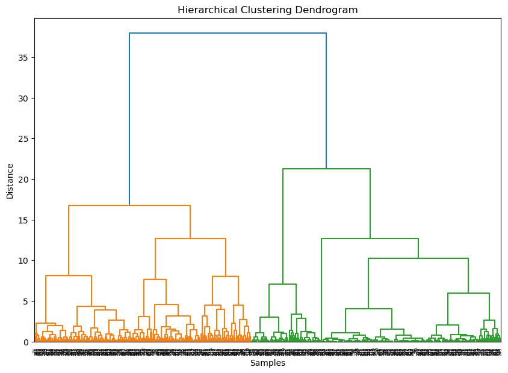
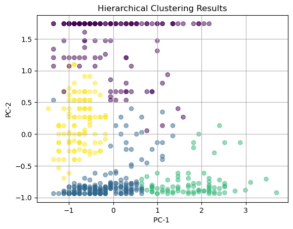
Hierarchical Clustering Results Interpretation
The dendrogram above visually represents the clustering hierarchy created using Ward’s linkage in hierarchical clustering. The dendrogram displays how data points are merged into clusters at different distances. By cutting the dendrogram at an appropriate height, we identify four clusters, which align with the patterns observed in the previous K-Means results.
The Hierarchical Clustering Results plot shows the clusters projected onto the first two principal components (PC-1 and PC-2). The data points are color-coded based on their assigned clusters:
1. Purple Cluster: Located at the top of the PC-2 axis, this group stands out distinctly, indicating it possesses features that separate it strongly along PC-2.
2. Yellow Cluster: Spread vertically across the middle region of PC-1, this group shows moderate cohesion while spanning a wide range along PC-2.
3. Teal Cluster: Concentrated toward the bottom-right, this cluster is more compact and defined along PC-1, suggesting strong intra-cluster similarity.
4. Blue Cluster: Positioned in the bottom-left region, this group appears dense and well-defined, with relatively low variation in PC-2.
The dendrogram supports the selection of four clusters, as indicated by the clear separation into branches at a distance of approximately 20 units. The clusters are well-defined and consistent with the natural groupings in the data, particularly along PC-1 and PC-2. Compared to other clustering methods, hierarchical clustering provides a clear advantage through its hierarchical structure, which allows for exploration of clusters at different levels of granularity.
Overall, hierarchical clustering confirms the patterns observed in the K-Means results, while offering additional insights through the dendrogram. The use of Ward’s linkage ensures minimal intra-cluster variance, producing cohesive and interpretable clusters. These clusters align with the underlying structure of the data, reinforcing the conclusions drawn from the PCA and K-Means analysis.
Discussion
The clustering analysis using K-Means, DBSCAN, and Hierarchical Clustering reveals meaningful patterns within the exoneration dataset. Each method identifies groupings that align with the underlying racial categories, which include Black, Hispanic, White, and Native American groups, as analyzed in the earlier exploratory data analysis (EDA).
K-Means:
K-Means successfully grouped the data into four clusters, which matches the primary racial groups observed in the dataset. The Elbow Method indicated that four clusters were optimal, with clear separations along PC-1 and PC-2. This method produced cohesive and interpretable clusters with minimal noise, effectively capturing the structure of the data. The results align well with the racial breakdown, as groups were well-separated, particularly along PC-1.DBSCAN:
DBSCAN produced varying results depending on theepsparameter. At eps = 1.0, the clustering achieved the best balance between cohesion and noise reduction, with a Silhouette Score of 0.78. However, increasingepsbeyond 1.0 caused most data points to merge into a single cluster, reducing the method’s ability to detect finer groupings. DBSCAN was particularly useful for identifying outliers and sparse regions in the dataset, which could correspond to smaller or underrepresented racial groups.Hierarchical Clustering:
Hierarchical clustering using Ward’s linkage produced a clear dendrogram, which supported the selection of four clusters. The resulting groupings closely matched those identified by K-Means, with well-defined clusters along PC-1 and PC-2. The dendrogram provided an intuitive visualization of the clustering process, confirming that the data could be effectively separated into four primary clusters.
Comparison of Methods
While all three methods identified meaningful clusters, K-Means and Hierarchical Clustering provided the clearest and most interpretable results. Both methods consistently produced four clusters, aligning with the racial categories explored in the dataset. K-Means was computationally efficient and produced well-separated groups, while Hierarchical Clustering offered additional insights through the dendrogram. DBSCAN, although effective at detecting outliers, struggled to form distinct clusters beyond certain parameter values.
Conclusion
The clustering results demonstrate that the exoneration data can be effectively grouped into four distinct clusters, which align closely with the racial categories: Black, Hispanic, White, and Native American. This finding supports the patterns observed during the EDA, where certain racial groups, such as Asians, were negligible and excluded from analysis. K-Means and Hierarchical Clustering were the most reliable methods, as they produced consistent and interpretable groupings that reflect the underlying data structure. These results have significant real-world implications, highlighting systemic disparities in exoneration outcomes that are strongly correlated with racial identity. Understanding these patterns can inform policy changes and further investigations into racial biases within the criminal justice system.